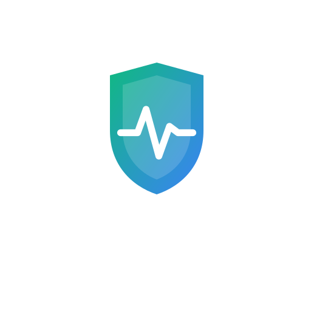

A free screening tool that scores your diabetes and hypertension risk against published ADA, WHO and JNC-8 thresholds. Works without internet, in four languages, and explains every point of your score.

Adults in India with hypertension
35.5% prevalenceAdults in India with diabetes
11.4% prevalenceLiving with prediabetes
Most do not know yetLanguages supported
EN / HI / GU / MRPrevalence figures: Anjana RM et al., Metabolic non-communicable disease health report of India: the ICMR-INDIAB national cross-sectional study (ICMR-INDIAB-17), The Lancet Diabetes & Endocrinology, 2023 — a survey of 113,043 adults across 31 states and union territories.
Every feature below exists because a clinic visit is hard to reach, expensive, or in the wrong language.
A question-answering assistant that only answers from a fixed set of guideline passages. If your question isn't covered, it says so instead of guessing. It will not suggest medicines or doses, and it points you to emergency care when a question needs it.
Risk is scored by fixed published thresholds — ADA glycaemic cut-offs, WHO and JNC-8 blood pressure stages, Asian-specific BMI and waist limits. Your result breaks down which factors added points, and which of those you can change.
The scoring runs on your phone, not on a server. Install SwasthSathi once and the screening still completes when the network drops — which is exactly when a clinic is furthest away.
Point your camera at a printed report and the values are read out of it — HbA1c, fasting glucose, blood pressure. Every extracted value is shown to you as a suggestion first. Nothing is entered until you accept it.
The full screening, results and advice in English, Hindi, Gujarati and Marathi. Questions are written in plain words, not clinical vocabulary.
Search live for diabetes and hypertension specialists around your current location, with the listing and rating shown exactly as the public map data provides it. SwasthSathi does not rank, recommend or endorse any doctor.
Saved screenings are locked to your account by the database itself, not just by the app. You can screen without an account at all — in that case nothing is stored.
Screen again after a few months and compare side by side. Change over time tells you more than any single score does.
Print or share a clean summary with your scores, the factors behind them and the thresholds used, so a consultation starts from evidence instead of memory.
About five minutes, start to result.
English, Hindi, Gujarati or Marathi.
Age, height, weight, waist, family history, habits.
Type them in, or photograph the report. Optional — the screening works without them.
Risk level, the factors behind it, what to do next — and you can ask follow-up questions.
Your risk score is never produced by a language model. It is arithmetic over published thresholds, and it runs on your device. A model is used in two narrow places, and both are checked afterwards.
Values are bounds-checked against what is physiologically possible before anything is scored.
DeterministicOptical character recognition pulls values off a photographed report. You confirm each one before it counts.
Model-assistedFixed ADA, WHO, JNC-8 and Asian BMI thresholds, computed on your phone. Same input always gives the same score.
DeterministicYour question is matched against a fixed set of guideline passages. If nothing matches closely enough, the assistant declines rather than improvising.
Model-assistedEvery citation is re-checked against the passages actually retrieved. Anything unverified is dropped before you see it.
Verified server-sideWe would rather under-claim and be trusted. If you think something here is wrong, tell us.
Diabetes and high blood pressure are quiet for years. Screening is how you find them while they are still easy to act on.
Start free screening